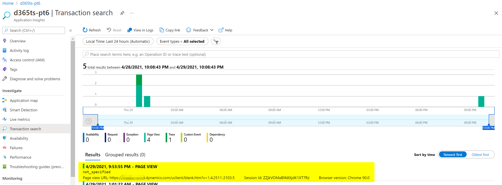
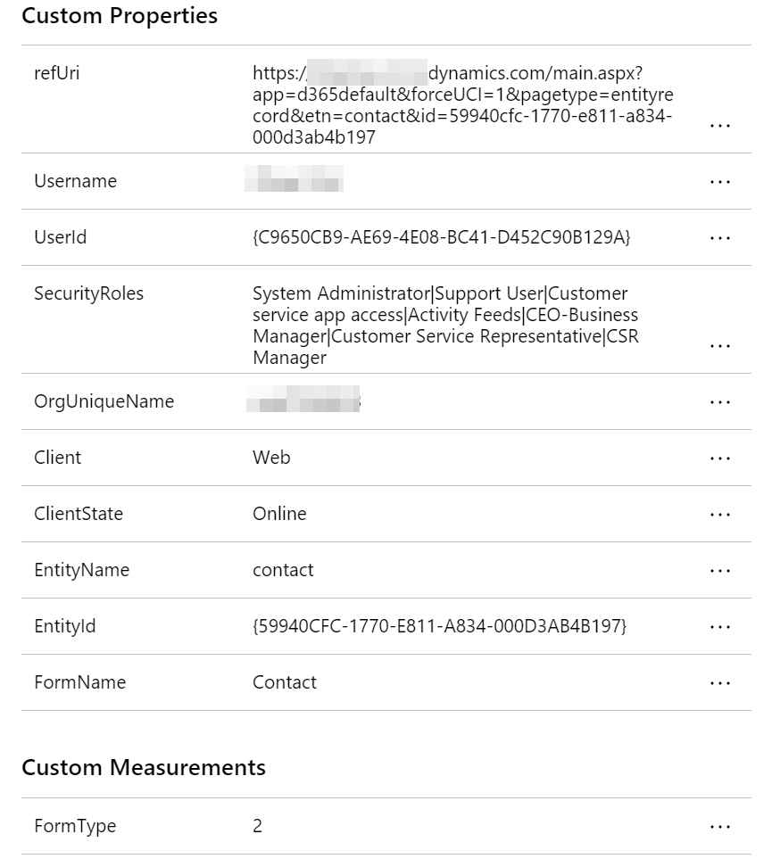

D365 TypeScript Web Resources - Part 6 - Application Insights
Before you get stuck into this make sure you’ve checked out any previous parts to the series. Each part in this series follows on from the previous, so you may need to grab the code from the previous part if you haven’t been following.
Application Insights
What is Application Insights?
Application Insights, a feature of Azure Monitor, is an extensible Application Performance Management (APM) service for developers and DevOps professionals. Use it to monitor your live applications. It will automatically detect performance anomalies, and includes powerful analytics tools to help you diagnose issues and to understand what users actually do with your app. It’s designed to help you continuously improve performance and usability. It works for apps on a wide variety of platforms including .NET, Node.js, Java, and Python hosted on-premises, hybrid, or any public cloud. It integrates with your DevOps process, and has connection points to a variety of development tools. It can monitor and analyze telemetry from mobile apps by integrating with Visual Studio App Center.
https://docs.microsoft.com/en-us/azure/azure-monitor/app/app-insights-overview
Setup
First lets install the npm package(s):
1 | npm install @microsoft/applicationinsights-web |
Next we need to setup Application Insights in Azure. If you don’t have an azure subscription you can signup for a free trial here.
Create an Application Insights Resource in Azure by following the steps here (you can stop at the bit where you copy the instrumentation key)
Now you have an app insights resource and the instrumentation key we are ready to go!
The Code
First we’ll put together a little module that encapsulates a minimal setup of Application Insights API
1 | import { ApplicationInsights } from "@microsoft/applicationinsights-web"; |
Now, we can simply import our module
1 | import { appInsights } from "./appinsights"; |
And start tracking page views
1 | appInsights.trackPageView(); |
Or track exceptions
1 | appInsights.trackException({ |
There are also other tracking functions trackMetric, trackEvent, trackTrace, etc.
Telemetry Initializer
One of the great things about the telemetry initializer is that it allow you to define some custom data/properties to include when tracking
1 | appins.addTelemetryInitializer((item) => { |
To have this included in all tracking we can add it with the module…
1 | const init = () => { |
You may even want to add a second telemetry initializer for adding some data from the form context
1 | export const addFormContextTelemetryInitializer = ( |
Now when the form loads we can add the form context initializer
1 | addFormContextTelemetryInitializer((formContext as unknown) as Xrm.BasicPage); |
What’s it look like!?
Ok ok! Here is what all that lovely data will look like in Azure Application Insights…
First we have the results in the transaction search:

Then after selecting a result we can see the detail:

And there we have it!
That’s all folks!
I hope that has been useful!
You can download a copy of the source code for this blog post here
Thanks for reading.
Ollie